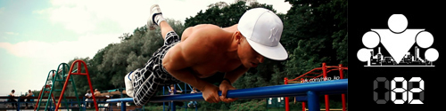
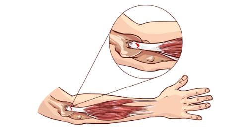
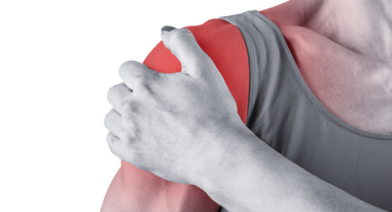
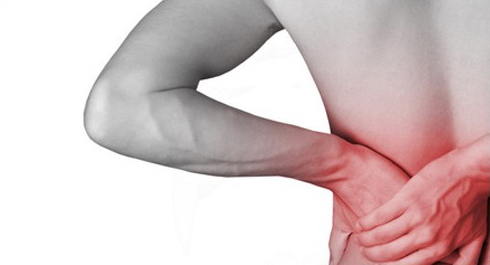

How do aerobic (cardio) and anaerobic (strength) workouts differ, and why can you not do pull-ups or dips for as long as you can pedal a bike or run? The secret is the so-called anaerobic threshold. After you cross it, muscles start to "switch off."
Physical activity is, in essence, an oxidation process in muscle cells, with the cardiovascular and respiratory systems taking part. From school biology and chemistry you know this process uses oxygen that comes to the muscles from the heart through arteries and a network of small vessels, capillaries, and then energy is released. In the muscles oxygen is replaced by carbon dioxide, and blood rich in CO2 goes back through the veins, through the heart, to the lungs, and then leaves the body through the respiratory organs.

Let's look at this a bit more from the biochemistry side. The main and most universal energy source for everyday activity and for any metabolic process is glucose (C6H12O6). In pure form it is not stored in animals or plants. In our case this vital compound is restored by enzymatic breakdown of a complex polysaccharide (C6H10O6)n — glycogen. Its stores sit in muscle tissue (about 1% of total mass; they are used first under active load) and in the liver (up to 5–6% of mass, about 100–120 g for an adult). Only glycogen stored in liver cells (hepatocytes) can be processed into glucose to feed the whole body.
With oxygen from outside, broken-down glycogen splits into glucose, which oxidizes and releases the energy needed for metabolism. That process is called glycolysis, and we already covered it in the infopost about muscle types and their energy supply. The key thing to remember now is that there are two kinds of glycolysis — aerobic and anaerobic.
When load rises during long activity, the first glycogen-breakdown mechanism sooner or later switches to the second. Everything depends on the balance between how fast lactate is produced, how it diffuses into the blood, and how it is taken up by muscles, heart, liver and kidneys. Lactate is formed even at rest (from muscles it enters the circulation and is later turned into glucose in the liver or used as fuel). While production equals consumption, there are no functional limits. So there is a kind of threshold where the rate of lactate accumulation starts to exceed the rate of its removal.
What is the anaerobic threshold?
From the biochemistry side, the anaerobic threshold (AnT, in some sources "lactate threshold") is a value (units: ml/kg/min) that shows how much oxygen a person can consume (per unit of body mass) without accumulating lactic acid. From the training side, AnT is the intensity (the easiest marker is heart rate, HR) of an exercise at which lactate neutralization cannot keep up with its production.

As a rule, AnT heart rate is about 85–90% of max HR. You can measure max HR with a series of short 60–100 m sprints, then read HR with a monitor and take the average. Or you can do two or three "for speed" bodyweight sets to failure: pull-ups, dips, plyometric push-ups, burpees, squats, and so on. The key is sharpness, speed and maximum work to failure. Measure HR after each set, then take the average and use that as a base. The result is strictly individual and, in a rough way, can be a landmark for your real AnT. The most accurate measurements use portable lactometers or complex lab equipment with approved methods. Still, there are conventional recommended heart-rate zones for different kinds of training depending on age.

Cardiovascular and endurance training is always work at a heart rate a bit below AnT. The most effective fat-burning work, meaning activation of lipid metabolism, is training at a low pulse (50–60% of max).
Can you raise AnT somehow?
Yes! You can raise the anaerobic threshold through your whole life (unlike, for example, VO2 max, which sooner or later plateaus — a limit set by genetics, in particular by hemoglobin in the blood). Research shows AnT rises in two ways: by lowering lactate production and by speeding up its removal.
If oxygen is fuel, like gasoline, and the heart is an internal-combustion engine, then, like engines from different makers, one person will use the same oxygen more economically than another. And like an engine, the whole cardiorespiratory system can get a kind of "chip tuning" through specialized training.
The familiar principle works here: if you want to improve a quality, give it a reason to grow. To raise AnT, you need regular sessions at a heart rate a bit above it (roughly 95% of max HR). For example, if your current AnT is at 155–160 bpm, do one, at most two, sessions a week at about 170 bpm.
There are four main adaptive changes that raise the anaerobic threshold.
1. More and larger mitochondria (they are the factors of aerobic energy production in muscle cells). Result: more energy by the aerobic path.
2. Higher capillary density. Result: more capillaries per cell, better delivery of nutrients and removal of by-products.
3. Higher activity of aerobic enzymes (they speed up chemical reactions in mitochondria). Result: more energy in less time.
4. More myoglobin (like hemoglobin in blood, it carries oxygen in muscle tissue from the membrane to the mitochondria). Result: higher myoglobin concentration, meaning more oxygen delivered to mitochondria for energy.